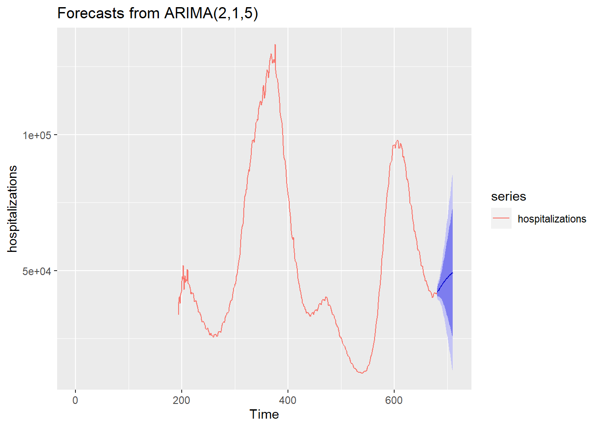
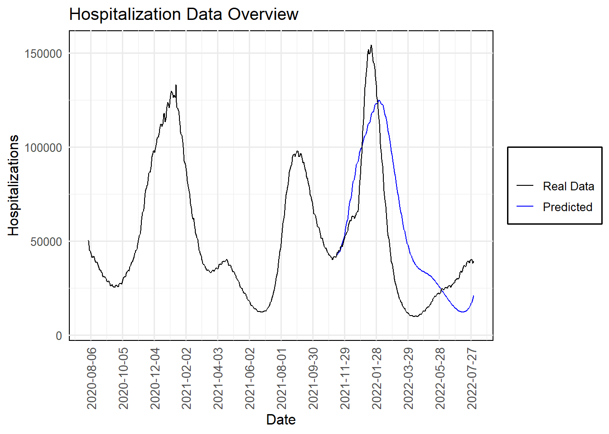

Chapter 11 Time Series: Forecasting Omicron
In early 2020, as the Covid-19 pandemic unfolded, the world found itself in uncharted territory. With waves of infections rising and falling, many felt helpless, unable to predict when the next wave would hit or how severe it might be. In response, I turned to time series forecasting, a method often reserved for finance and weather predictions, to shed light on what many considered unpredictable: the future trajectory of Covid-19, especially hospitalization rates in the USA.
11.0.1 The Power of Time Series Estimation
Time series methods are not just about understanding patterns, they are about anticipating future events. This analysis delves deep into such forecasting methods to predict Covid-19 trends, transitioning from autoregressive models to the more complex neural networks. Each step in our journey not only demonstrates the technical prowess of these models but also their practical importance in a real-world crisis.
11.0.2 Showcasing Predictive Prowess
Our journey through data science takes us from the foundational autoregressive models, which adjust based on past data, to neural networks that learn and predict non-linear patterns in disease spread.
This analysis is a testament to the power of time series estimation. It’s a story about how, amidst global uncertainty and fear, data science techniques can offer hope and guidance by illuminating the path ahead. Let’s dive into how we accomplished this, the insights we gained, and the impact of our predictions.
11.2 Autoregressive Integrated Moving Average Model (ARIMA)
11.2.1 What is ARIMA?
The ARIMA model is a popular tool for forecasting and analyzing time series data. ARIMA models are capable of capturing a suite of different standard temporal structures in time series data.
11.2.2 Components of ARIMA:
AR (Autoregressive) - This component of the model captures the influence of previous values in the series. For instance, in an AR(1) model, each value in the series is regressed on its previous value. The “2” in ARIMA(2,1,5) suggests that the current value of the series is likely influenced by the two immediately preceding values.
I (Integrated) - To make the time series stationary, which means its statistical properties such as mean and variance are constant over time, the data are differenced. The “1” in ARIMA(2,1,5) indicates that the data has been differenced once to achieve stationarity. Differencing is the process of subtracting the previous observation from the current observation.
MA (Moving Average) - This component models the error of the model as a combination of previous error terms. The idea here is that the error for any given time period could be influenced by the error of previous time periods. The “5” in ARIMA(2,1,5) indicates that the error terms of the five previous forecasts are used to make the current prediction.
11.2.3 Selection of Model Parameters:
The auto.arima function from the forecast package simplifies the process of identifying the most appropriate ARIMA model for our data. It automatically tests various combinations of p (AR order), d (I order), and q (MA order) to find the best fit according to specified information criteria:
- AIC (Akaike Information Criterion)
- AICc (Corrected Akaike Information Criterion)
- BIC (Bayesian Information Criterion)
These criteria help in selecting a model that balances good fit with model simplicity, penalizing more complex models to prevent overfitting.
11.2.4 Example Usage in R:
set.seed(125)
arima_model <- auto.arima(hospitalizations, stationary = FALSE, ic = c("aicc", "aic", "bic"), trace = TRUE)##
## Fitting models using approximations to speed things up...
##
## ARIMA(2,1,2) with drift : 8275.252
## ARIMA(0,1,0) with drift : 8505.054
## ARIMA(1,1,0) with drift : 8406.3
## ARIMA(0,1,1) with drift : 8450.343
## ARIMA(0,1,0) : 8503.096
## ARIMA(1,1,2) with drift : 8311.461
## ARIMA(2,1,1) with drift : 8284.289
## ARIMA(3,1,2) with drift : 8281.901
## ARIMA(2,1,3) with drift : 8238.446
## ARIMA(1,1,3) with drift : 8373.185
## ARIMA(3,1,3) with drift : 8279.071
## ARIMA(2,1,4) with drift : 8219.794
## ARIMA(1,1,4) with drift : 8268.736
## ARIMA(3,1,4) with drift : 8246.127
## ARIMA(2,1,5) with drift : 8196.061
## ARIMA(1,1,5) with drift : 8239.86
## ARIMA(3,1,5) with drift : 8199.037
## ARIMA(2,1,5) : 8193.994
## ARIMA(1,1,5) : 8237.905
## ARIMA(2,1,4) : 8217.727
## ARIMA(3,1,5) : 8196.982
## ARIMA(1,1,4) : 8266.834
## ARIMA(3,1,4) : 8244.052
##
## Now re-fitting the best model(s) without approximations...
##
## ARIMA(2,1,5) : 8215.592
##
## Best model: ARIMA(2,1,5)We used the automatic ARIMA to determine which is the best model. We can see here that it was the ARIMA(2,1,5).
11.2.5 Forecasting:
Once the best model is selected (ARIMA(2,1,5) in this case), it can be used to forecast future values of the series:
arima <- arima(hospitalizations, order = c(2, 1, 5))
forecast_ori <- forecast(arima, h = 30, level = c(80, 95))
hospitalizations <- ts(hospitalizations)
forecast_ori %>% autoplot() + autolayer(hospitalizations)
This model forecasts the next 30 days of hospitalizations, providing predictions along with confidence intervals (80% and 95%). It gives us an overall trend line that tells us that something may be coming.
11.3 Enhancing Predictions with a Neural Network
Now, let’s “cheat” a little by shifting gears from traditional statistical models to the more contemporary machine learning arena. We’re going to deploy a neural network to take our forecasting a notch higher. Why? Because sometimes, you need to bring out the big guns!
11.3.1 Why Neural Networks?
While ARIMA is fantastic for linear relationships and patterns based on past values, it may miss out on more complex, nonlinear interactions in the data. This is where neural networks shine, they excel at capturing these nonlinear relationships without explicit specification from the user.
11.3.2 Using nnetar for Time Series Forecasting
In R, we use the nnetar function from the forecast package, which fits a type of neural network known as a feed-forward neural network with automatic lag selection. Here’s why it’s advantageous for our purposes:
Automatic Lag Selection: Just like ARIMA,
nnetaruses past values (lags) to predict future values. However, it automatically selects these lags based on the data, which simplifies the modeling process.Handling Nonlinearity: The neural network can model complex patterns in the data, making it suitable for time series with nonlinear trends that an ARIMA model might miss.
Robustness to Noise: Neural networks are generally more robust to noisy data, making them quite effective in real-world scenarios where data might not be perfectly clean.
11.3.4 Details of nnetar Function:
nnetarFunction: Fits a neural network to a univariate time series. By default, it uses 1 hidden layer with the number of nodes being set to (number of inputs + outputs) / 2.Lambda Parameter: We used a lambda value of 0.5 for a Box-Cox transformation, which helps stabilize variance across the time series, enhancing the model’s ability to learn the data dynamics effectively.
11.3.5 Visualizing Neural Network Forecasts
To showcase our neural network’s prowess, we plot its predictions alongside the actual data. This visual representation helps us confirm the model’s effectiveness at capturing trends and making future predictions.
df <- d_pre %>%
dplyr::select(c(date, hosp)) %>%
mutate(index=1:n()) %>%
mutate(prediction = "Real Data")
nnet <- as.data.frame(nnetforecast)
nndates <- d_pre$date[1]+ 1:length(nnet$`Point Forecast`)+length(d_pre[,1])
nnetdata <- nnet %>%
rename(hosp = `Point Forecast`) %>%
mutate(index=1:n()+length(d[,1]))
future <- cbind(nndates, nnetdata)
future<- future %>%
rename(date = nndates) %>%
mutate(prediction = "Predicted")
df <- rbind(df, future)
# Plotting the forecast alongside the actual data
ggplot() +
geom_line(data = df, aes(date, hosp, color = factor(prediction))) +
geom_line(data = d, aes(date, hosp), color = "black") +
scale_x_date(date_breaks = "60 days", date_labels = "%Y-%m-%d",
limits = as.Date(c("2020-08-01", "2022-08-01"))) +
theme_minimal(base_size = 12) + # Using theme_minimal for a clean background
theme(axis.text.x = element_text(angle = 90, vjust = 0.5, size = 10),
panel.background = element_rect(fill = "white"), # Set the panel background to white
plot.background = element_rect(fill = "white", color = NA), # Optional: Set the plot background to white
legend.background = element_rect(fill = "white")) + # Set the legend background to white
scale_color_manual(values = c("Real Data" = "black", "Predicted" = "blue", "Continued Data" = "black"),
name = "",
breaks = c("Real Data", "Predicted", "Continued Data"),
labels = c("Real Data", "Predicted", "Continued Data")) +
labs(x = "Date", # Setting the label for the x-axis
y = "Hospitalizations", # Setting the label for the y-axis
title = "Hospitalization Data Overview") 
11.3.6 Understanding Our Forecasting Model’s Performance
Looking at our “Hospitalization Data Overview” plot, it’s clear that the journey through time series analysis has yielded some powerful insights. The black line represents the actual hospitalizations due to COVID-19, displaying several significant waves over the period. The blue line, our model’s prediction, aligns closely with these trends, showing both the strength and potential of our forecasting approach.
11.3.6.1 Analysis of the Prediction Peaks
- Predicting the Omicron Wave: With only one variable, hospitalizations, our model accurately correctly projected a significant rise at the end of 2021 into early 2022, aligning closely with the real-world data. Though the prediction slightly lagged behind the actual onset, it successfully captured the subsequent wave’s magnitude and timing. This slight delay highlights typical challenges in forecasting such volatile phenomena but underscores the model’s robustness in capturing overall trends.
This forecasting exercise illuminates the true power of time series estimation. Our approach didn’t just replicate past patterns. Time Series estimation provided a forward-looking perspective, anticipating future waves and offering valuable insights that could help mobilize resources, inform public health strategies, and, ultimately, save lives.
Our exploration of time series forecasting illustrates the strength of both ARIMA and neural network models in anticipating Covid-19 trends. While the ARIMA model provided a solid foundation, the neural network excelled, predicting not only the Omicron variant wave but also the subsequent wave, albeit a few days off. This analysis demonstrates the potential of advanced forecasting techniques in public health planning and response.